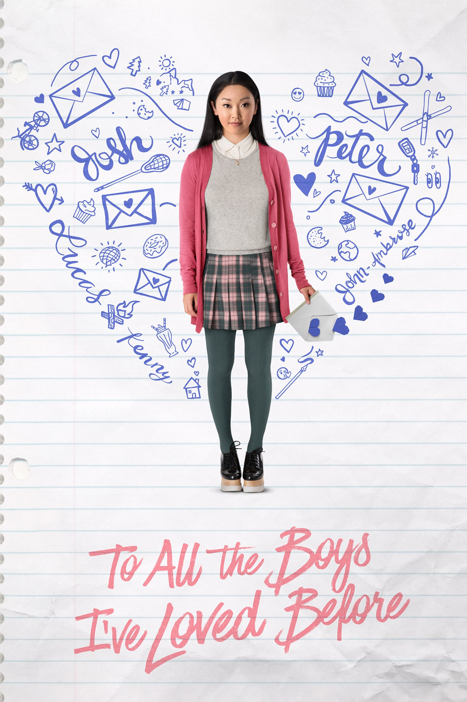
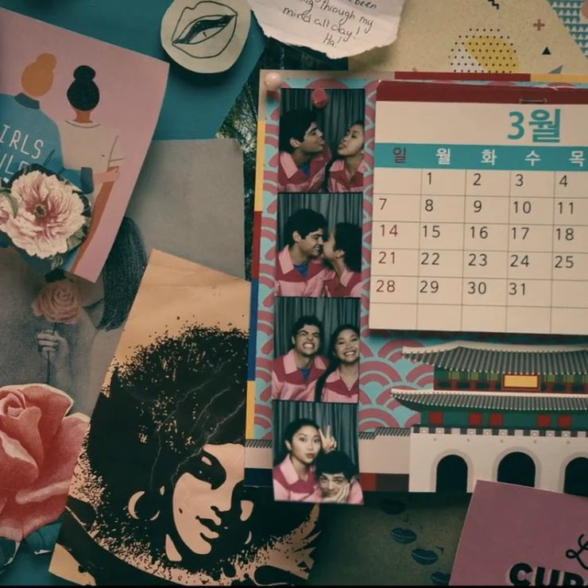
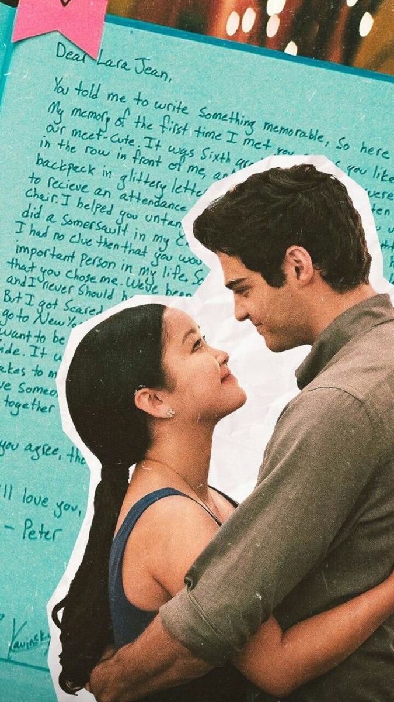

Romance, Comedy, Drama
2018
99 minutes
Susan Johnson
To All the Boys I've Loved Before follows Lara Jean Covey, a shy high school student whose secret love letters are unexpectedly mailed to her past crushes. As her private feelings become public, she enters a fake relationship with Peter Kavinsky, only to discover that their pretend romance may be turning into something real.